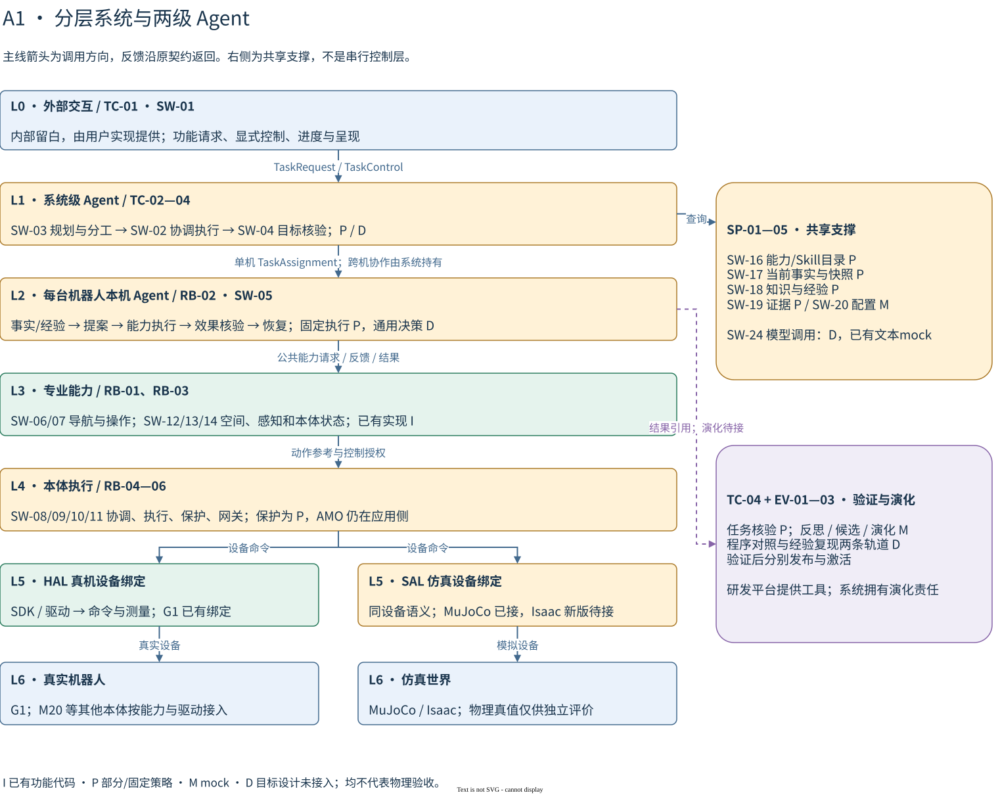
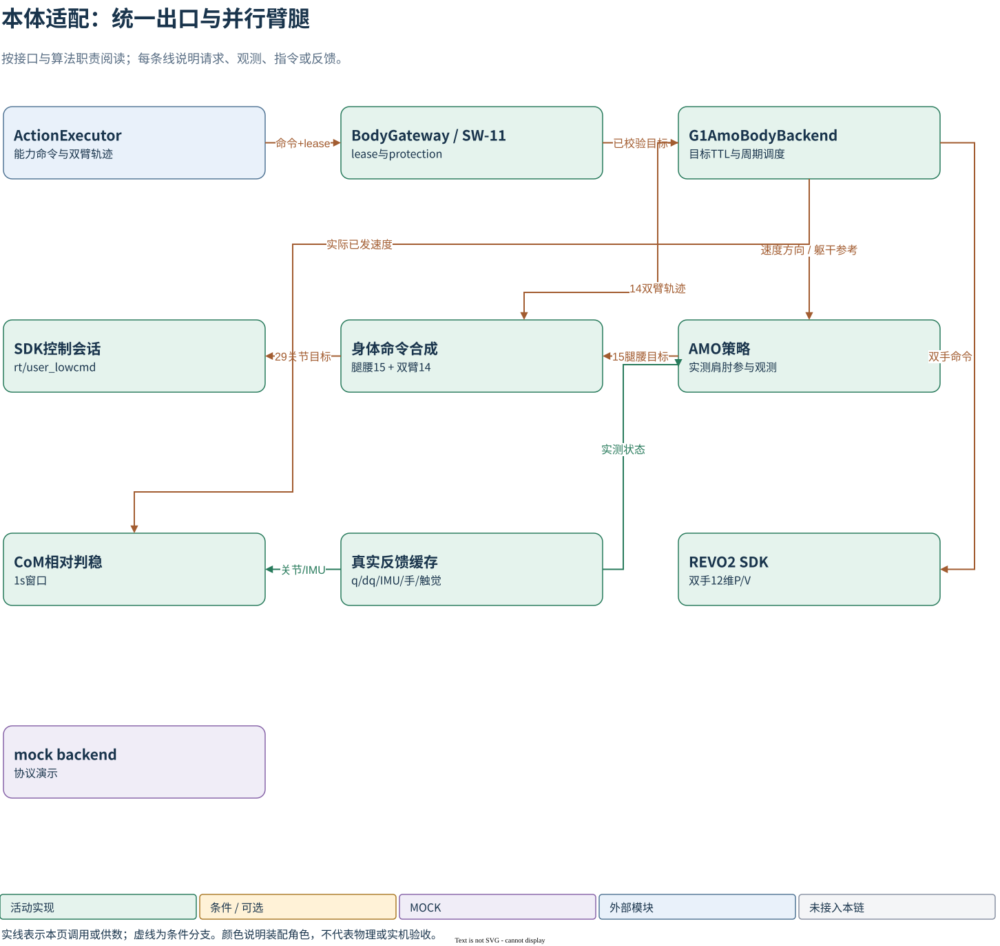

本页记录经过代码库实测核对的真实目录归属与进程拓扑映射，用于帮助研发人员精确定位功能实现、排查模块边界，并避免因历史文档残余路径产生的误引。

顶层工作区源码总览
| 顶层目录 | 语言 / 构建栈 | 运行进程形态 | 核心功能范围 |
|---|---|---|---|
apps/collaboration_platform/ |
TypeScript (React/Vite) + Python FastAPI | 前端静态资源 + 只读展示服务（:8110 /
:18640） |
Three.js 双精度渲染、17+
个前端工作台、观测回放与交互入口代理 |
apps/model_gateway/ |
Python FastAPI + WebSocket + vLLM/ASR/TTS Worker | 独立推理网关进程（:18080） |
文本、语音流、向量与视觉模型的并发上限控制、鉴权与本地资产摘要校验 |
src/system_app/ |
Python 3 + rclpy + FastAPI + SQLite/FTS5 |
系统节点 + 交互网关（:8090）+
舰队总线（:18641） |
12 大智能体规划/运行时/验证/记忆/离线进化模块与交互运行时 |
src/facility_hal/ |
Python 3 FastAPI + WAL 日志 | 独立工装网关进程（:18642） |
MuJoCo 物理设备、Modbus PLC 与
Mockup 设施的统一控制接口 |
src/embodied_core/ |
C++20 Header-only + Python ROS 映射库 |
跨层公共基础库（编译期 / 运行期共享） | EmbodimentSpecPod、SalWire
v2、SafetyFrame、无锁 SHM 原语与契约映射 |
src/robot_app/ |
C++20 (CMake) + Python ROS 边界包装 |
4+1 多进程二进制 + 6 个 .so
HAL/SAL 插件 |
robot_supervisor 及 4
个孤立子进程、核心运动/定位/安全/操作算法与 ROS 适配 |
src/embodied_interfaces/ |
ROS 2 IDL (CMake/ament) | 接口定义包（共 84 份 IDL 文件） |
跨节点强类型 .msg、.srv 与
.action 通信契约定义 |
configs/ |
YAML / JSON | 只读声明式配置中心 | 9 类机器人本体描述、双场景清单、技能契约、工位档案与进程资源权重 |
deployment/ 与 facrictl |
Shell + Python CLI | 宿主控制入口 | 容器与本地系统装配、发布清单制备、零积分静态预检与全流程生命周期管理 |
SystemApp
十二大核心模块（src/system_app/）
系统层主体采用清晰的分域目录架构，其中
src/system_app/modules/ 下稳定维护以下 12
个核心模块，配合外围 ROS
适配器（adapters/ros/）、舰队总线（fleet_bus/）及交互网关（interaction_gateway/）共同运转：
| 目录路径 | 核心类 / 职责定位 | 上下游接口边界 |
|---|---|---|
modules/team_planner/ |
DynamicCapabilityPlanner：融合能力档案、记忆与设备状态编译规划 |
产出澄清请求、宏技能计划或拓扑 DAG，经
/system/compile_plan 提供编译 |
modules/team_runtime/ |
TeamRuntime：DAG
节点推进、依赖检查、任务下发与回执归集 |
经 /system/execute_assignment 与
StarFleetBus 协调机器人及工装进度 |
modules/team_verifier/ |
TeamVerifier：执行与观测来源匹配、多臂归属、空间地图来源与持股守恒验证 |
评估返回 SATISFIED、UNSATISFIED 或
UNKNOWN，拦截未完成核验的虚假通过 |
modules/reflection_engine/ |
ReflectionEngine：消费真实失败包并剖析根因（仅用于离线实验与诊断） |
连接 EvidenceStore 与
EvolutionManager，不直接写入在线控制路径 |
modules/evolution_manager/ |
EvolutionManager：管理离线进化候选生成、沙箱对照验证、采纳与版本回滚 |
服务平台
RsiLab（/api/rsi/*）并受场景门禁严格审查 |
modules/equipment_runtime/ |
设施运行客户端：将抽象工装动作分派至 FacilityHAL
网关并追踪异步完成状态 |
经 :18642 HTTP + Bearer 鉴权调用工业外设或地勤设施 |
modules/capability_registry/ |
SkillCatalog：预载技能契约模板、前置条件与效果声明与参数校验 |
为 team_planner 和 P05
技能库界面提供只读权威目录 |
modules/knowledge_memory/ |
基于 SQLite/FTS5
的分层记忆库（spatial_annotation、procedure、episode、knowledge） |
导入场景静态知识种子包并支撑混合语义规划检索 |
modules/context_store/ |
单机上下文快照存储：维护在线机器人状态、能力与坐标参考快照 | 供 CompilerEndpoint 与多机协作视图读取原子快照 |
modules/evidence_store/ |
结构化审计证据仓：归集步骤进展、失败样本与运行摘要 | 为离线反思与历史复查留存不可篡改证据记录 |
modules/config_manager/ |
运行时规划与系统配置参数管理与读取接口 | 对接交互网关 /configuration 路由 |
modules/interaction_runtime/ |
语音 VAD/ASR/TTS 对话意图解析、短时记忆、TourEngine 与
LiveHub SSE 推送 |
通过 :8088 交互控制台与 :8090
网关承接人机多轮协作指令 |
单机
C++20 4+1
进程与插件目录映射（src/robot_app/）
单机控制端在 src/robot_app/CMakeLists.txt 中明确编译出
5 个独立可执行程序与 6
个动态加载共享库插件，其内部模块化组织如下：

- 守护总控进程（
robot_supervisor）：位于src/robot_app/supervisor/，包含SupervisorRuntime、TopologyProbe与ProportionalResourceAllocator，负责硬件核组探测、共享内存创建、EmbodimentSpecPod下发、25 ms 心跳监管及P1–P3子进程80 ms退避重启。 - P0
硬实时控制进程（
robot_body_rt）：入口processes/body_rt_main.cpp，内部聚合sensor_adapters（硬件读样与帧检验）、state_estimation（里程计与正运动学 TCP 位姿）、action_executor（轨迹插补与导纳控制）、body_gateway（指令打包写入 HAL）四个200 Hz线程以及protection_runtime（50 Hz带外SafetyFrame与激光避障反射保护）线程，通过进程内无锁BodyRtBus交换样本。 - P1
感知与定位进程（
robot_spatial_perc）：入口processes/spatial_perc_main.cpp，在10 Hz周期内驱动spatial_runtime（VoxelIcpLocalizer点云定位）与perception_runtime（AprilTagTracker与RoiGatewayClientROI 受限上传）。 - P2
规划协调进程（
robot_motion_plan）：入口processes/motion_plan_main.cpp，以50 Hz运行motion_coordinator（协调全身扭转锁定、接近锥面屏蔽与末端标志），配合20 Hz运行的navigation_runtime（HybridAStar+MPPI+PlanarAdjustment）及按需/20 Hz 运行的manipulation_runtime（UpperBodyPlanner17 轴加权 DLS 逆解与 49 候选搜索）。 - P3
本地任务与审计进程（
robot_task_agent）：入口processes/task_agent_main.cpp，运行config_client（启动期 URDF/策略 SHA-256 校验）、local_task_runtime（10 Hz消费task_cmd_ring.shm与回报task_receipt_ring.shm）及evidence_buffer（将无锁evidence_ring*.shm批量写回本地 JSONL 日志）。 - 六大 HAL/SAL
动态库插件（
src/robot_app/backends/）：运行时由algorithms/hal/plugin_loader.cpp动态加载libsal_shm.so（SIM_SAL仿真共享内存驱动）或五型真机插件（libhal_facri.so、libhal_g2.so、libhal_m20.so、libhal_rp1.so、libhal_ugv_can.so，均返回HalOrigin::REAL_HAL）。 - Python ROS 2
边界适配器（
src/robot_app/*.py）：ros_node.py、capability_ros_node.py（及v3–v5版本包装）、embodiment_ros.py、manipulation_context_ros.py等文件仅负责将4+1本机运行时状态桥接为 ROS 2 话题、服务与 Action 端点。
核心配置与部署目录索引
- 本体描述清单（
configs/robots/*/description.yaml）：精确维护facri、rp1、g2、m20、c919_ugv_tractor、c919_ugv_forklift、c919_ugv_belt、c919_ugv_shuttle与历史参考g1共 9 型构型 YAML。 - 场景与工位清单：
configs/scenes/manifests/{factory,c919}.json、configs/planning/factory-full-cycle-horizontal.json、configs/workstations/c919-{apron,lab-mockup}-v1.json、configs/fleets/c919-heterogeneous-v1.json、configs/runtime/process_resource_weights.yaml。 - 技能合同目录（
configs/skills/*/contract.yaml）：集中保存工作站循环（workpiece-processing）、机坪保障主 DAG（c919-turnaround）及五条业务支线等数十份强约束原子与复合技能契约。